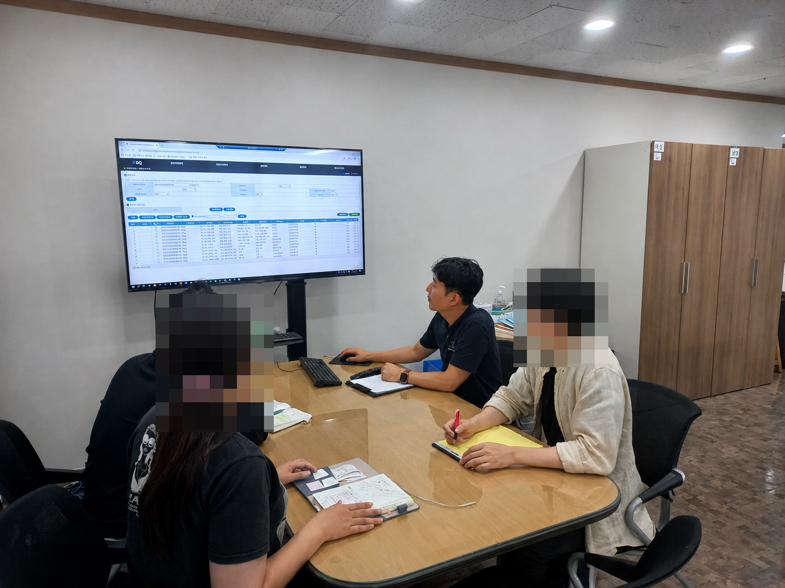
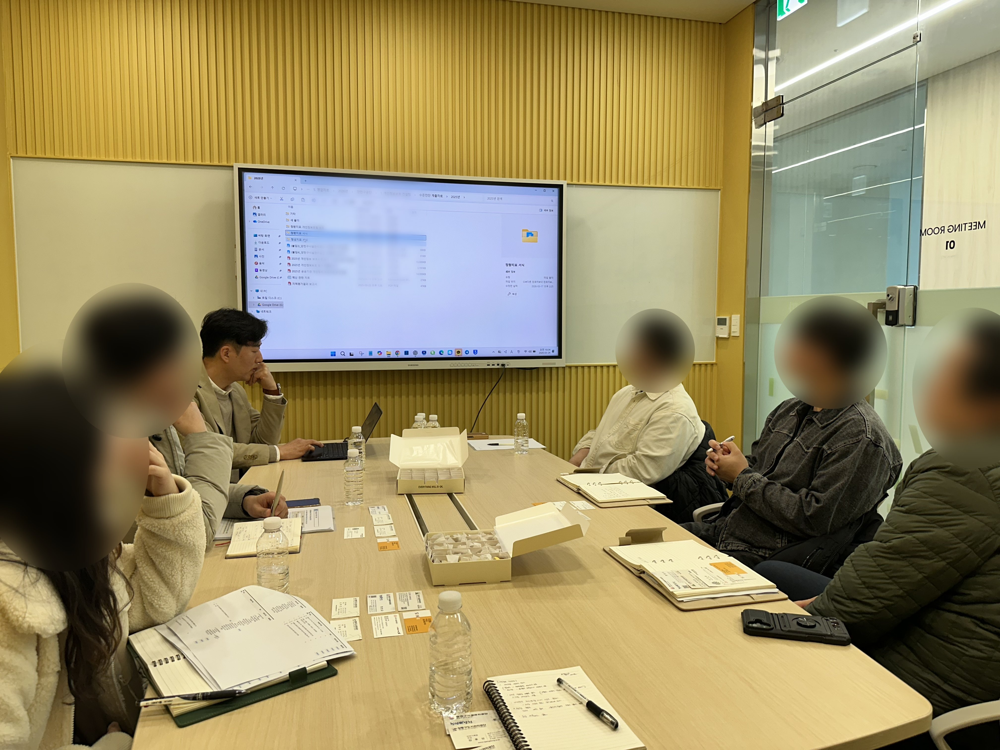
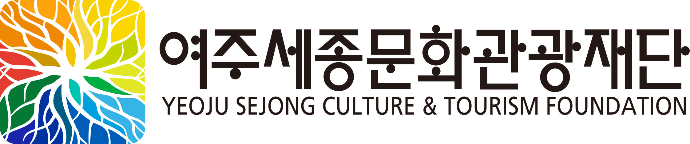
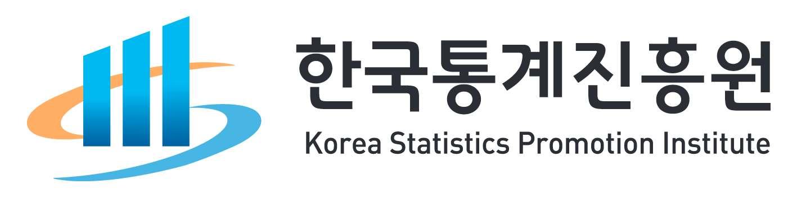

정보보안·개인정보보호 컨설팅을 중심으로 정보화 자문, 자체 개발 AI 챗봇 및 전문 솔루션 서비스를 제공합니다.
01
정보보안 컨설팅
정보보호 관리체계와 시스템 보안 현황을 진단하고, 취약점 분석과 실행 가능한 개선방안을 제시합니다.
정보보호 진단취약점 개선
02
개인정보보호 컨설팅
개인정보 보호수준 진단, 내부관리계획 및 처리방침 정비 등 기관의 개인정보보호 관리체계 개선을 지원합니다.
보호수준 진단관리체계 정비
03
정보화 컨설팅 · 구축 자문
정보시스템 운영 현황을 진단하고 중장기 개선방안, 사업기획·제안요청서 작성 및 구축사업 관리 자문을 제공합니다.
정보화 진단기획·PMO
04
자체 개발 AI 챗봇 (SaaS)
딥시큐가 직접 개발·운영하는 AI 챗봇으로, 기관 홈페이지의 이용자 안내와 반복 문의 응대를 지원합니다.
자체 개발·운영구독형 SaaS
05
악성메일 모의훈련 서비스
파수 솔루션을 기반으로 딥시큐가 모의훈련 운영, 결과 분석 및 보안 인식 개선 자문을 수행합니다.
훈련 운영결과 분석
06
문서뷰어 솔루션 공급 (VIEWSTORY)
협력사 문서 미리보기 솔루션 VIEWSTORY를 공급·유통하여 홈페이지의 문서 열람 환경 개선을 지원합니다.
협력사 제품솔루션 공급
어떤 업무를 준비하고 계신가요?
Home > Company
회사소개
딥시큐는 정보보안·개인정보보호 컨설팅을 중심으로 정보화 진단과 구축사업 자문, 자체 개발 AI 챗봇 서비스를 제공합니다.
About DeepSecu
정보보안·개인정보보호의 현장에서, 실행 가능한 개선방안을 제시합니다
딥시큐(DeepSecu)는 기관의 정보보안 및 개인정보보호 관리체계를 진단하고, 운영 여건에 맞는 개선과제와 이행방안을 제시하는 전문 컨설팅 기업입니다.
정보보호 관리체계 점검, 개인정보 처리업무 진단, 내부관리계획 및 처리방침 정비 등 현장 중심의 자문을 수행합니다. 또한 정보시스템 운영현황 분석, 중장기 개선방안 수립, 정보화 사업기획 및 구축단계 자문을 지원하며, 자체 개발 AI 챗봇과 협력사 솔루션 공급·운영 서비스도 제공합니다.
딥시큐는 파수의 악성메일 모의훈련 솔루션을 활용하여 기관의 훈련 계획 수립, 대상 및 시나리오 협의, 훈련 운영, 결과 분석과 개선 자문을 수행합니다. 제품 개발사와 훈련 수행 주체의 역할을 구분하여 안내합니다.
딥시큐는 파수의 악성메일 모의훈련 솔루션을 활용하여 기관의 훈련 계획 수립, 대상 및 시나리오 협의, 훈련 운영, 결과 분석과 개선 자문을 수행합니다. 제품 개발사와 훈련 수행 주체의 역할을 구분하여 안내합니다.
훈련 환경 사전 협의
기관 메일 환경과 훈련 대상, 발송 정책 및 필요한 사전 설정을 협의합니다.
훈련 계획 및 운영
훈련 목적과 일정에 맞춰 시나리오 및 발송 계획을 수립하고 훈련을 수행합니다.
결과 분석 및 개선 자문
열람·반응 현황 등 훈련 결과를 분석하고 후속 교육 및 개선 방향을 제안합니다.
📊 모의훈련 서비스 비용 산정 체계 및 딥시큐 컨설팅 지원 가이드 (협의 과금)
훈련 대상 인원, 수행 횟수, 시나리오 및 결과보고 범위에 따라 용역 비용을 협의합니다.
도입 비용 산정 요인
세부 조건 및 체크리스트
비용 정책 및 자문 혜택
전사 참여 인원 규모
훈련 대상자 수 세분화 파악 (부서 명단 구성 및 테스트 발송 타깃 규모 조율)
기관별 도입 환경 분석 후 최적의 합리적 견적 수립 (상담 협의)
연간 모의훈련 집행 횟수
임직원 인식 개선 극대화를 위한 주기적인 훈련 회차 (연 1회 집중형 / 상·하반기 분할 2회 등)
딥시큐 가벼운 컨설팅 지원
훈련 결과 분석서 연계 조치, 개인정보 파일 전수조사 서식 매핑 가이드 및 수준평가 증적 확보 자문 포함
🛡️ 공공기관 정부수준평가 증적 완비 안전망 가이드
정부 및 주무부처의 보안 점검 지침에 부합하도록, 모의훈련 집행 결과보고서를 공공 감사 서식 규격에 맞춰 정밀 보정해 드립니다. 소속 기관의 인프라 독소 조항 배제와 예산 검토 가이드라인은 **[종합 자문 상담]** 채널을 통해 제3자 독립 감리 관점에서 신속하게 도출해 드립니다.
Home > 전문 컨설팅
전문 컨설팅
정보보안·개인정보보호를 중심으로 기관의 관리체계 진단과 개선, 정보화 사업기획 및 구축 자문을 제공합니다.
정보화 사업기획 및 구축사업 관리 자문
발주기관의 업무 요구사항과 정보시스템 현황을 바탕으로 사업 범위를 구체화하고, 제안요청서·사업비 산출·과업심의 등 발주 준비를 지원합니다. 구축 단계에서는 일정·산출물·품질·보안 사항을 검토하여 발주기관의 의사결정을 돕습니다.
🔍 정보화 기획 및 PMO 핵심 자문 범위
요구사항 및 RFP 설계 검토
현업 부서의 요구사항을 구체적 기능 명세로 정의하고, 모호하거나 공급사에 편향된 독소 조항을 배제한 제안요청서(RFP) 및 과업지시서 수립 지원
SW 대가산정 정밀 검증
소프트웨어사업 대가산정 가이드라인에 따른 기능점수(FP) 산정 및 M/M 투입공수 교차 검토로 예산 낭비 차단 및 사업비 타당성 입증
구축단계 공정·품질·보안 관리
과업대비표 기반 요구사항 추적성 매트릭스(RTM) 운영, 마일스톤별 핵심 산출물 표준 준수 검토, 시큐어코딩 및 웹 취약점 조치 확인 총괄
검수 및 운영 인수인계 지원
단위·통합 테스트 시나리오 적정성 검증, 운영자/사용자 매뉴얼 검토, 준공검사 조서 작성 및 유지관리 이관 프로토콜 확립 지원
📋 정보화 사업 기획 및 SW 대가산정 표준 검증 체계 가이드
단계
검증 및 자문 구분
산출 방식 및 세부 수행 내역
적용 기준 및 기대효과
1단계
요구사항 명세 및 RFP 검토
과업범위 명확화, 기능/비기능 요구사항 상세 정의
사전방지 불명확한 과업으로 인한 분쟁 및 설계 변경 예방
2단계
기능점수(FP) 개발원가 산정
데이터 기능(ILF/EIF) 및 트랜잭션 기능(EI/EO/EQ) 도출
표준준수 기능 규모에 근거한 객관적 개발비 산출
3단계
직접경비 및 제경비 검증
클라우드·인프라 임차료, 상용SW 라이선스, 직접경비 검토
예산보정 불필요한 과다계상 차단 및 마진율 가이드 준수
4단계
PMO 마일스톤 품질 통제
WBS 진도 점검, ERD·화면설계서 검토, 보안 취약점 조치
품질확보 개발 일정 지연 리스크 통제 및 안정적 정시 오픈
수행 절차 및 주요 산출물
수행 절차
현황 및 요구사항 검토
사업계획·발주자료 작성 지원
구축 단계 산출물·품질 검토
검수 및 인수인계 자문
주요 산출물 (과업범위에 따라 조정)
요구사항 정리 및 제안요청서 검토안
사업비·과업기간 검토 의견
구축 단계 점검 및 결과보고 자료

신뢰 기반의 공공데이터 개방 전략 및 품질 고도화
공공기관이 보유한 원천 데이터의 안전하고 효율적인 민간 개방 표준 체계를 수립합니다. 데이터 개방에 따르는 저작권 컴플라이언스 요소를 정밀 분석하고, 공유 과정에서의 부작용을 통제할 수 있는 최적의 거버넌스를 설계합니다.
📊 주요 데이터 거버넌스 범위
품질수준 진단 가이드
행정안전부 공공데이터 품질 진단에 부합하는 정형/비정형 오염 차단 체계 정립 및 오류율 개선
데이터 가명 조치
민감 정보 유출 방지를 위한 가명·비식별화 처리 및 저작권 컴플라이언스 리스크 분석
오픈 API 규격 설계
타 기관 및 민간 서비스와의 유기적 데이터 연계를 위한 표준 인터페이스 검토 및 구축
📊 행정안전부 공공데이터 운영실태 평가 영역별 핵심 지표
📥 개방 및 활용 영역
차기 중장기 개방계획 수립 현황 점검
목록등록관리시스템 내 테이블 검토
목표 대비 실적 조기 이행율 평가
🔍 데이터 품질 관리 영역
보유 DB 메타데이터 최신화 및 등록
품질진단 결과 오류율 최소화 이행
표준 규칙 적용 및 구조 안정성 검증
💼 인프라 및 기반 영역
제공책임관 및 실무담당자 공식 지정
전 직원 데이터 문해력 교육 이수율
기관장 추진 의지 및 점검 회의록 증빙
정보화 현황 진단 및 중장기 개선방안 수립
기관의 업무시스템, 전산 인프라, 유지관리 계약 및 정보화 운영체계를 검토합니다. 운영상 문제와 개선 필요사항을 정리하고, 예산·인력·사업 우선순위를 고려한 단계별 개선과제를 제시합니다.
⚙️ 정보화 종합 진단 및 개선 영역
전산 인프라 및 클라우드 실사
서버·스토리지·네트워크 장비 노후도 및 자원 이용률(Capacity) 정밀 분석, 공공 클라우드(민간/공공존) 전환 타당성 검토
업무시스템 아키텍처 진단
ERP, 전자결재, 대표 누리집 및 대민 서비스 채널의 연계 호환성, 단종(EOS) 리스크 및 재구축 우선순위 도출
유지관리 계약 및 SLA 적정성 검토
통합유지관리 용역의 과업 범위, 과다/과소 비용 구조, SLA 서비스 수준 협약 지표 및 불공정 독소조항 스크리닝
전산 조직 및 법정 거버넌스 수립
정보화 전담 인력 공석에 따른 운영 리스크 진단, 행정안전부·개보위 법정 의무 책임관(CISO·CPO·데이터제공관) 지정 매핑
🗺️ 정보화 운영체계 종합 진단 및 단계별 중장기 개선 프레임워크
구분
현황 진단(AS-IS) 핵심 점검 사항
중장기 개선(To-Be) 실행 가이드라인
1. 인프라 & 클라우드
서버·네트워크 내구연수 초과 장비 실사 및 용량 포화도 분석
인프라표준화 노후 장비 순차 교체 규격 수립 및 클라우드 네이티브 전환 설계
2. 응용시스템 (ERP·웹)
ERP·전자결재·누리집 분산 운영 및 데이터 중복·단절 진단
시스템고도화 데이터 표준 인터페이스 연계 및 통합 포털 재구축 중장기 로드맵 수립
3. 유지관리 계약(SLA)
유지보수 사업 대가 산정 근거 미흡 및 과업 범위 모호성 점검
예산효율화 표준 공수 기반 대가 재산정, SLA 지표 정량화 및 공정 조달 규격안 마련
4. IT 조직 & 거버넌스
전산 전문 인력 부재로 인한 외주 의존도 심화 및 보안 책임 공백
거버넌스정립 법정 책임관(CPO/CISO) 공식 임명, 직무 R&R 정비 및 비상대응 매뉴얼 구축
수행 절차 및 주요 산출물
수행 절차
시스템·계약·조직 현황 파악
운영 문제점 및 개선 필요사항 분석
우선순위·추진일정 수립
중장기 개선방안 결과보고
주요 산출물 (과업범위에 따라 조정)
정보화 운영현황 진단보고서
분야별 개선과제 및 우선순위
단계별 추진 로드맵 및 예산 검토자료
정보보안 관리체계 진단 및 기술적 보안 개선 자문
기관의 정보보호 관리체계와 정보시스템 운영 현황을 함께 점검합니다. 보안 규정·운영 절차의 이행 여부를 확인하고, 서버·네트워크·웹서비스 등의 취약요인을 분석하여 우선순위에 따른 개선과제를 제시합니다.
정보보안 관리체계 및 기술 진단 주요 범위
정보보호 관리체계 진단
정보보호 정책·지침, 담당자 역할, 접근권한 및 계정관리, 사고 대응 절차 등 관리적 보호조치의 운영 현황 점검
정보시스템 취약점 점검
서버·네트워크·DB·웹서비스 등 점검 대상과 범위를 협의하고 주요 설정 오류 및 취약요인을 확인
보안 개선 및 이행 자문
진단 결과를 위험도와 개선 시급성에 따라 분류하고 조치 방향, 담당부서별 이행과제 및 후속 점검 방안 제시
📋 국가 정보보안 지침 연계 기술 진단 표준 체계
연번
진단 대영역
핵심 보안 점검 포인트 및 내역
보안 강화 가이드라인
1
시스템 취약점 진단
서버 OS 커널 패치 설정, 기본 관리자 계정 변경 여부 스캔
필수점검 미사용 포트 전면 폐쇄 및 불필요 데몬 제거
2
네트워크 아키텍처
대민 서비스 구간(DMZ)과 내부 업무용 인프라 물리적 격리 검증
구조개선 침입방지시스템(IPS) 및 탐지 룰셋 주기적 최적화
3
데이터베이스 보안
공공 데이터베이스 내 고유식별정보 암호화 필드 및 알고리즘 검증
컴플라이언스 개인정보 암호화 적용 기준 및 키 관리 적정성 검토 및 접근기록 보관
4
웹 애플리케이션
OWASP Top 10 기반 SQL 인젝션, 크로스사이트 스크립팅(XSS) 취약점 진단
필터링 입력값 검증 소스코드 시큐어코딩 표준 가이드 수립
수행 절차 및 주요 산출물
수행 절차
현황조사 및 점검범위 정의
관리체계·기술적 취약요인 진단
위험도 분석 및 개선과제 도출
결과보고 및 이행 자문
주요 산출물 (과업범위에 따라 조정)
정보보안 현황 및 취약점 진단보고서
위험도별 개선과제 및 조치 권고안
보안 관리체계·운영절차 개선 의견

개인정보보호 수준 진단 및 관리체계 정비
기관의 개인정보 처리 현황과 관련 법령·지침에 따른 보호조치 이행 여부를 진단합니다. 개인정보파일, 처리방침, 내부관리계획, 위탁관리 및 유출 대응 절차를 검토하고 기관 여건에 맞는 개선방안과 문서 정비를 지원합니다.
개인정보보호 진단 및 관리체계 정비 범위
개인정보 보호수준 진단
기관에 적용되는 평가·점검 기준을 검토하고 개인정보 처리 현황과 증빙자료를 확인하여 개선 필요사항 도출
개인정보 처리 현황 및 보호조치 점검
개인정보파일 관리, 수집·이용·제공·파기 절차, 접근권한, 위탁관리 및 안전성 확보조치의 운영 현황 확인
내부관리계획 및 처리방침 정비
내부관리계획, 개인정보 처리방침, 유출 대응절차 및 관련 서식의 적정성을 검토하고 개정안 마련 지원
⏳ 개인정보 보호수준 평가 대응 핵심 타임라인 플랜
Phase 01. 즉시 조치 과제
개인정보 처리방침 전면 개정 및 공개 정보 최신화
1년 이상 장기 미갱신된 처리방침의 부적정하거나 오래된 내용을 현행 기준에 맞게 정비합니다. 구제기관 연락처(KISA 침해신고센터 등)의 구법 표기 요소를 전면 현행화하여 홈페이지 전면에 배치합니다.
Phase 02. 단기 집중 과제
전 부서 개인정보파일 전수조사 및 위수탁 계약 정비
각 사업부서별로 분산 축적 중인 고객 정보, 홈페이지 문의 내역, 교육 신청자 데이터의 목록을 전수조사하여 종합 관리대장을 수립하고 정부 시스템 등록 요건을 갖춥니다.
Phase 03. 중기 정착 과제
법정 필수 내부관리계획 수립 및 침해사고 대응 매뉴얼 문서화
기관에서 정비가 필요한 행정적·절차적 서식 가이드를 정립합니다. 유출 사고 발생 시 법정 신고·통지 요건과 내부 보고체계를 고려한 대응 절차를 정립합니다.
개인정보보호 컨설팅 진행 절차
1
현황 확인
개인정보 처리업무와 보유 문서를 파악합니다.
📄 처리 현황·자료 목록
2
평가 항목 대조
평가 항목별 증빙자료와 보완이 필요한 부분을 확인합니다.
📄 증빙자료 목록·보완 항목
3
개선과제 도출
처리방침과 내부관리계획 등 정비 대상과 우선순위를 정합니다.
📄 문서 개선안·이행계획
4
결과 공유
진단 결과와 기관이 이어서 확인할 사항을 정리합니다.
📄 진단보고서·후속 점검표
산출물은 기관의 과업 범위에 따라 달라질 수 있습니다.
사회공학적 위협 대응을 위한 맞춤형 역량 강화 세미나
형식적인 주입식 법정의무교육을 탈피하여, 공공·유관기관 실무 임직원들의 실제 침해 대응력을 향상시키는 실전 프로그램을 운영합니다. 최신 랜섬웨어 및 스피어 피싱 공격 패턴을 내재화하는 실무형 세미나입니다.
🎓 역량 강화 프로그램 라인업
악성메일 모의훈련 자문
정부 감사 및 공공수준평가 지침 규격에 맞춘 모의 메일 시나리오 연계 설계 및 결과 추적 관리 대행
공공 정보화 실무 교육
최신 개인정보보호법 개정안의 실무 적용 해설서 특별 제공 및 정식 직무 교육 수료증 발급
위탁사 동반 세미나
외부 외주 용역사 및 유지관리 인력이 현장 실무 일선에서 놓치기 쉬운 필수 보안 의무 특별 전수
🛡️ 연간 보안 교육훈련 및 인식제고 표준 이행 로드맵
1분기 (Q1). 기반 조성 단계
연간 정보보호 및 개인정보 교육 추진 계획 수립 및 임직원 승인
정부수준평가 정량 지표 만족을 위한 계획서를 공문화하고, 고위 공직자 및 전 직원을 포함한 대상별 법정 의무 시간 배정 및 교육 콘텐츠 소스를 확정합니다.
2분기~3분기 (Q2~Q3). 집중 훈련 단계
사회공학적 피싱 메일 대응 상·하반기 실전 모의훈련 집행
Mind-SAT 기반 고도화 시나리오 템플릿을 사용하여 불시에 훈련을 수행합니다. 메일 열람율, 첨부파일 실행율 통계를 도출하고 악성 행위 유발 임직원 대상 긴급 재교육을 연계 적용합니다.
4분기 (Q4). 지표 완비 단계
외부 위탁수탁사 동반 직무 세미나 및 최종 수료증 증적 정비
기관 내부 정규직을 넘어 개인정보 처리를 위탁한 외주 용역 업체 실무진까지 포함하는 연계 세미나를 정립합니다. 최종 이수율 증빙 원본을 취합하여 공공 감사 평가단 제출 서식으로 래핑합니다.
Home > Performance
수행 실적
정보보안·개인정보보호 컨설팅, 정보화 진단 및 구축 자문 등 주요 수행 분야와 프로젝트 경험을 소개합니다.
정보보안·개인정보보호
관리체계 진단 및 개선
정보화 진단·개선
현황 분석 및 개선방안 수립
정보화 기획·PMO
사업기획 및 구축 자문
2026 · 산업 분야 협회
정보화·정보보호 중장기 개선방안 수립
🎯 기관의 과제
시스템과 운영 방식의 개선 필요성을 파악하고, 어떤 일을 먼저 추진할지 정하는 과제였습니다.
🔎 딥시큐가 맡은 일
업무시스템과 운영 구조를 분석하고, 개선 대안을 비교해 단계별 추진 과제를 정리했습니다.
📄 주요 산출물
운영 현황 분석, 개선 과제, 단계별 이행 로드맵을 담은 최종 결과보고 자료를 제시했습니다.
2026
[국립기관] 국립문화예술단체
홈페이지 및 온라인 미디어 플랫폼 통합 재구축 사업 마스터플랜(ISMP) 및 대가 산정 기능점수(FP) 검증 자문 총괄
정보화 기획 · PMO
2025
[대형공공] 서울시 핵심 대민 서비스 채널
누리집 총 133개소 중 115개소 문서 미리보기(VIEWSTORY) 조달 패키지 구매 및 기술 검증 자문 완료
정보화 기획 · PMO
2026
[정부유관기관] 정부 지정 통계진흥단체
신규 평가대상 지정에 따른 전산·보안·개인정보보호 거버넌스 진단 및 보호수준 평가 정량지표 수립 자문
정보보안 · 개인정보
2026
[공공기관] 서울 다수 자치구 시설관리공단
전산실 인프라 고도화 가이드 및 전산 정보화 장비 사양 규격 최적화 자문
정보화 진단 · 중장기 개선
2026
[공공기관] 지자체 출연 자치구 시설관리공단
행정안전부 주관 개인정보 보호수준 평가 대응 및 임직원 악성메일 대응력 진단 수행
정보보안 · 개인정보
Our Clients
주요 파트너 및 고객사

지자체 출연 문화예술재단
국립문화예술단체
농림축산식품부 산하 법정단체
서울시 지정 노동정책 전문기관

국가 통계 전문 공공기관
서울 자치구 시설관리공단
서울 자치구 시설관리공단
Home > Contact Us
문의하기
공공 시스템 통합 기획, 인프라 최적 규격 자문 및 보안 이슈에 대해 전문 컨설턴트가 명확한 답을 드립니다.